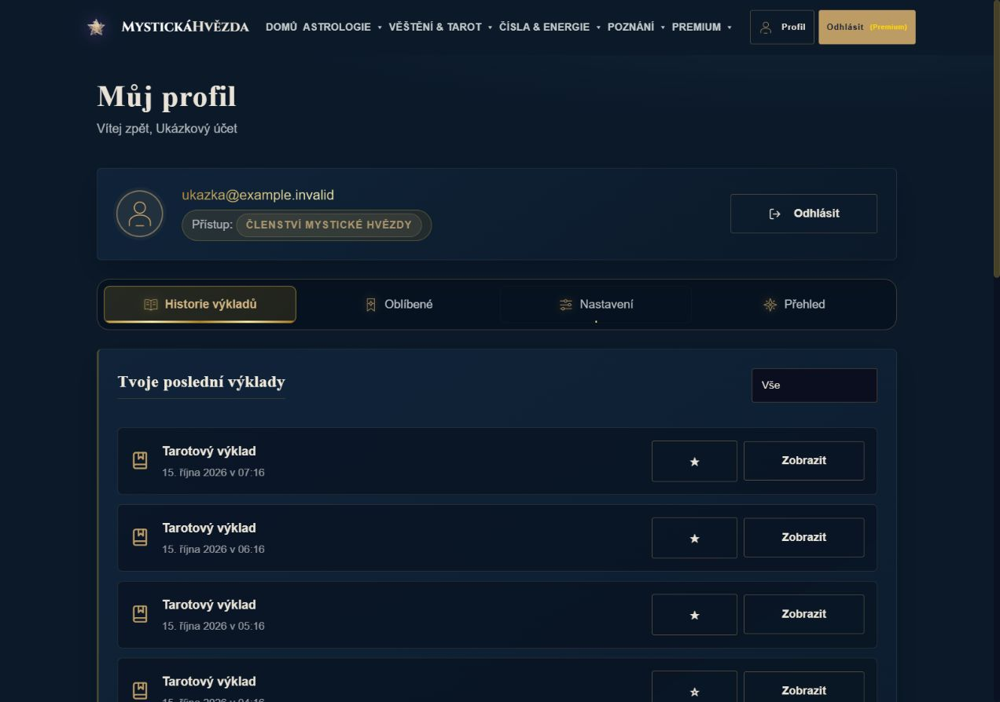
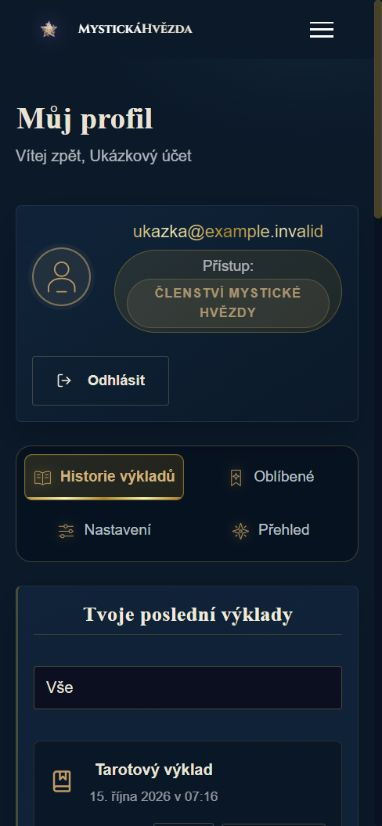
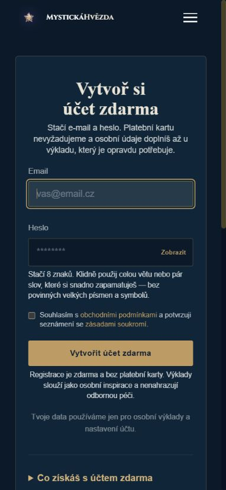
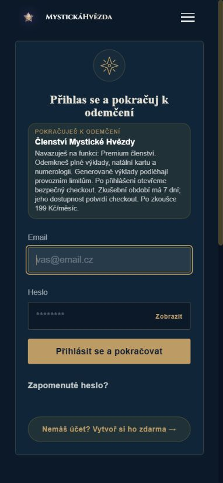
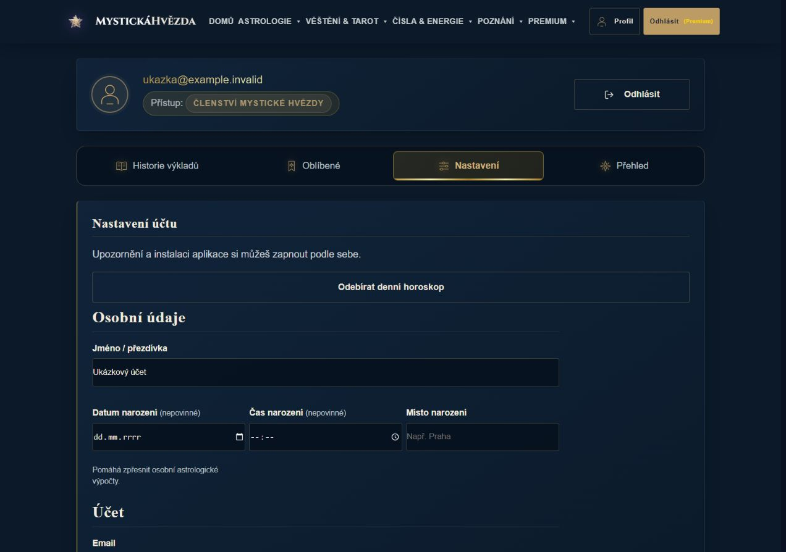
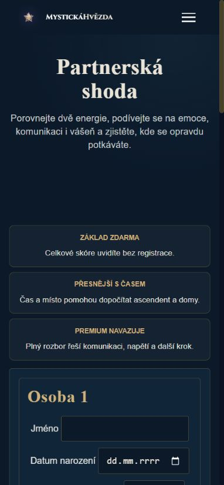
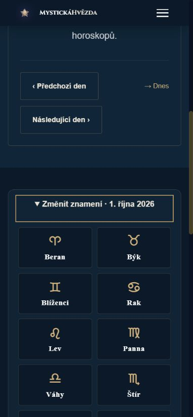
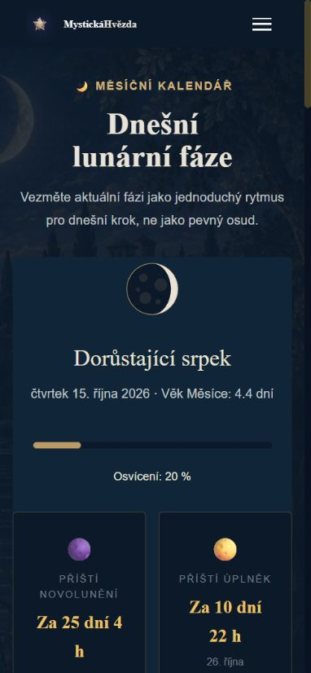
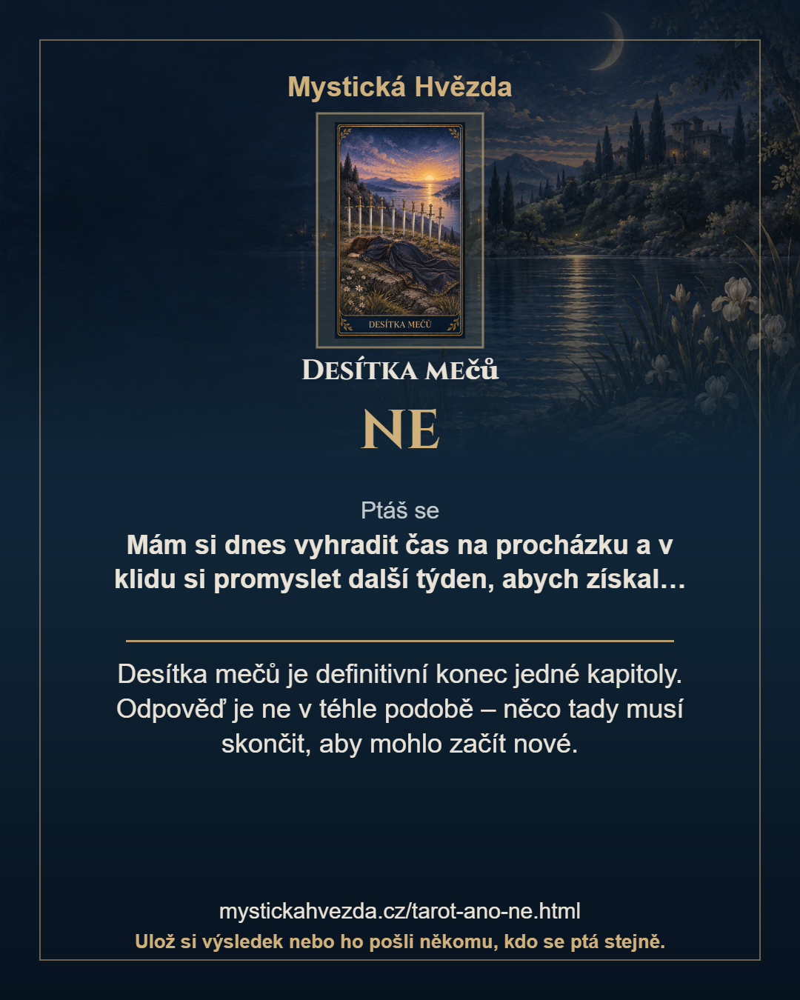
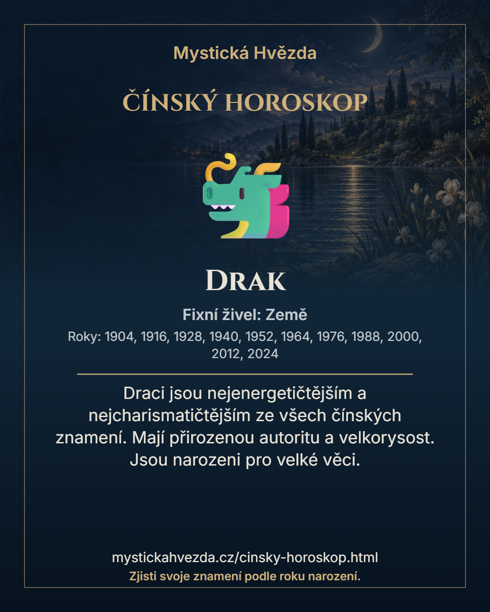

Klidnější nástroje a přehlednější účet
Historie a nastavení jsou blíž, opakované katalogy ustoupily a společné prvky používají navy, krémovou a tlumené zlato.
Přesný rozsah oprav, kontroly a zbývající práce · Původní úplný průzkum
Snímky profilu používají výhradně smyšlený místní účet. Nejde o data zákazníka ani důkaz produkčního nasazení.
Profil: vlastní historie hned nahoře




Nastavení odpovídá skutečnému přístupu



Měsíc ve společné paletě

Technická kontrola PNG exportů a známé zbývající vady
Oba snímky jsou skutečně vykreslené PNG 1080 × 1350. Zachycení v místním náhledu nahrazuje systémový share dialog, neověřuje jej. Starší text Desítky mečů a barevné emoji čínského horoskopu patří do další dávky.



